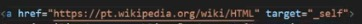

Síntese da Aula RDE05-Hyperlinks
Hiperlinks
Hyperlink ou link
É uma referência dentro de um documento em hipertexto para outras partes do mesmo documento, outros documentos, arquivos ou endereço eletrônico.
Os links podem ser:
Externos ou Remotos
Internos
Locais
Com Endereços de Correio ou Arquivos
MARCAÇÃO DE HIPERLINKS
A marcação de hiperlinks acontece utilizando a tag <a> e a propriedade href que faz a referência para ao conteúdo desejado.
Sintaxe
<a href> - Indica que vai ter um hiperlink;
"endereço" - Indica o endereço externo/interno da própria página;
Conteúdo Referenciado Clicável - Indica a referência sobre o link.
HIPERLINKS EXTERNOS OU REMOTOS
São links que referenciam sites ou páginas da web. Na propriedade href utilizamos a URL(Uniform Resource Locator) para a referência que desejamos.
Sintaxe
<a href> - Indica a referência para URL.
target="_blank" - Realiza a abertura do link em outra aba.

target="_self" - Realiza a abertura do link na própria página.
 rel="external" - Indica que é referente ao um link externo, está ligando para alguma parte em algum outro lugar;
hreflang - Define qual é a linguagem e ativa a tradução caso a pessoa precise.
rel="external" - Indica que é referente ao um link externo, está ligando para alguma parte em algum outro lugar;
hreflang - Define qual é a linguagem e ativa a tradução caso a pessoa precise.
HIPERLINKS INTERNOS
São links que apontam a um lugar diferente dentro da mesma página e possibilita acessar diferentes parágrafos ou seções quando o documento é extenso.
Sintaxe
"#referencia" - Uma palavra para indicar a referência,
a name="referencia" - Indica a marcação para o navegador encontrar a ligação e fazer o link interno, através da mesma palavra de referência.
HIPERLINKS LOCAIS
São links que apontam para outras páginas dentro de um mesmo site.
Sintaxe
"arquivo.html" - Vai realizar a busca dos arquivos dentro da pasta utilizada.
HIPERLINKS EM IMAGENS
É possível realizar hiperlinks imagens envolvendo a tag de imagem com a tag de hiperlink.
Sintaxe
img src="imagem.jpg" - Ao invés do conteúdo, coloca-se a tag de imagem para abrir a imagem.
HIPERLINKS PARA DOWNLOADS DE ARQUIVOS
São links que apontam para arquivos e possibilitam realizar download deste arquivos
Sintaxe
"arquivo.extensão" - Onde ele está localizado, como o servidor ou em uma pasta no computador;
download - Indicando que vai ser realizado um download;
"arquivo.extensão" - Indica o tipo da extensão do arquivo;
type="tipo" - Indica a Média Timer que é uma identificação de que tipo é esse arquivo.
HIPERLINKS PARA ENDEREÇO ELETRÔNICO
São links que apontam para um endereço eletrônico
Sintaxe
"mailto" - Indica o email para e em seguida o qual deseja.